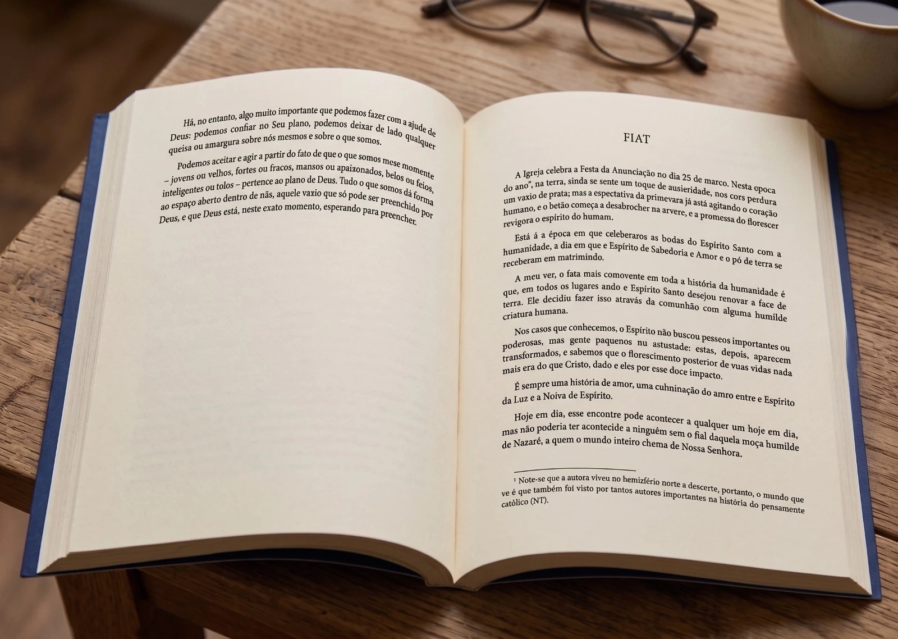

Conheça um dos grandes clássicos da espiritualidade mariana do século XX.
Há livros que instruem a inteligência; outros, que inflamam a devoção. Poucos, entretanto, possuem a rara virtude de nos transformar inteiramente, do olhar ao coração. Maria, a Flauta de Deus pertence a essa pequena linhagem de obras que nos fazem contemplar realidades conhecidas como se as víssemos pela primeira vez.
Em Maria, a flauta de Deus (The Reed of God), Caryll Houselander oferece uma meditação mariana de grande profundidade teológica, centrando-se na Virgem como figura de abertura absoluta à graça. O livro não é um tratado abstrato nem uma obra de mera devoção sentimental; ele combina contemplação, imagens poéticas e intuição mística para mostrar como a alma humana pode tornar-se — seguindo o exemplo de Maria — um instrumento tocado pelo sopro de Deus. Seu estilo, lúcido e fervoroso, insere-se na tradição da espiritualidade católica do século XX, mas mantém um frescor vívido que o torna particularmente acessível e profundamente ancorado na realidade vivida.
Caryll Houselander, escritora e mística inglesa convertida ao catolicismo, foi profundamente marcada pelas rápidas mudanças espirituais e sociais de sua época. Toda a sua obra busca discernir a presença de Cristo na vulnerabilidade, no sofrimento e no cotidiano humanos. Essa sensibilidade molda o livro: Maria é apresentada não como uma figura distante, mas como um modelo interior de receptividade, silêncio e fecundidade espiritual.
Este livro é recomendável a qualquer pessoa que deseje aprofundar sua compreensão do papel de Maria na vida cristã, sem sacrificar a substância intelectual em nome da piedade. É um texto breve, rico e luminoso, capaz de nutrir a reflexão, a oração e uma compreensão mais íntima da Encarnação.

Neste livro, encontramos a Virgem Santíssima como ápice da humildade, da vida cotidiana, pequena e sem brilho, e ao mesmo tempo como a mais excelsa das criaturas, cujos louvores serão cantados por "todas as gerações".
O mistério da Redenção não se inicia nos palácios nem nos acontecimentos extraordinários, mas na franca disponibilidade de um coração que nada reserva para si. Toda a riqueza desta obra nasce dessa intuição fundamental: Maria não é apenas objeto de veneração; é a forma perfeita da alma que se oferece inteiramente à ação da graça.
Daí a imagem que dá título ao livro.
Uma flauta nada possui de grandioso em si mesma. Seu valor reside em ser um instrumento dócil, inteiramente disposto a receber o sopro daquele que a toma nas mãos. A música não lhe pertence; atravessa-a. Assim também a alma cristã alcança sua verdadeira dignidade quando deixa de fazer de si mesma o centro de todas as coisas e se torna transparente à vida de Deus.
Essa imagem percorre toda a meditação de Houselander com admirável unidade. A vaziez deixa de significar privação e revela-se como capacidade; o silêncio deixa de parecer esterilidade e manifesta-se como preparação; a obscuridade deixa de ser abandono e torna-se o lugar secreto onde a graça amadurece seus frutos.
Poucos autores souberam descrever com tanta delicadeza o crescimento invisível da vida espiritual. Como a semente confiada à terra ou a criança formada no seio materno, Cristo cresce na alma segundo um ritmo que escapa à impaciência humana. Há um Advento interior que precede toda manifestação exterior da graça, e aprender a respeitar esse tempo talvez seja uma das lições mais consoladoras deste livro.
"A maioria das mulheres, se estivessem esperando um filho, recusar-se-iam a atravessar colinas apressadamente para realizar uma visita por pura bondade. Elas diriam que precisam cuidar de si mesmas e daquele filho ainda na barriga, e que esse dever vem antes de qualquer outro. A Mãe de Deus não pensou assim.
Isabel também estava grávida e, embora o próprio filho de Maria fosse Deus, ela não se esqueceu das necessidades de Isabel — algo que é, para nós, quase inacreditável, mas típico dela. Ela saudou sua prima Isabel e, ao som de sua voz, João agitou-se no ventre de sua mãe e saltou de alegria. "Eu vim", disse Cristo, "para que tenhais vida, e vida em abundância"." Trecho do capítulo "Advento"
Escrita durante os anos sombrios da Segunda Guerra Mundial, esta obra não ignora a experiência do sofrimento, da ansiedade ou da perda. Ao contrário, foi precisamente em meio às inquietações de uma civilização dilacerada que Caryll Houselander encontrou, na humildade de Maria, uma resposta surpreendentemente atual: uma resposta não feita de explicações fáceis, mas da confiança serena que nasce quando o homem abandona a pretensão de governar sozinho a própria existência.
É por isso que Maria, a Flauta de Deus permanece extraordinariamente vivo. Sua doutrina é sólida sem jamais se tornar árida; sua linguagem é poética sem resvalar para o sentimentalismo; sua piedade é profundamente mariana porque é, antes de tudo, profundamente cristocêntrica. Em cada página, a figura da Virgem conduz o leitor não a si mesma, mas Àquele que nela encontrou uma morada perfeitamente disponível.
Mais do que ensinar a admirar Maria, Caryll Houselander convida seus leitores a aprender com ela a difícil arte da receptividade espiritual. Toda alma é chamada a tornar-se um lugar onde Cristo possa novamente tomar carne; toda existência, por mais escondida que seja, pode converter-se em instrumento da graça; toda vida, quando inteiramente entregue a Deus, pode tornar-se música.
A mística inglesa que descobriu Cristo no coração do mundo
Caryll Houselander (1901–1954) foi uma das vozes mais singulares da espiritualidade católica inglesa do século XX. Escritora, artista e poeta, ela pertence àquela rara tradição de autores capazes de unir profunda intuição espiritual, sensibilidade literária e uma atenção extraordinária aos dramas concretos da existência humana.
Nascida na Inglaterra no início de um século marcado por profundas transformações, Houselander atravessou experiências pessoais de inquietação, sofrimento e busca espiritual. Convertida ao catolicismo ainda jovem, sua fé amadureceu por meio de uma percepção cada vez mais intensa do mistério de Cristo presente em todas as pessoas e circunstâncias da vida.
Sua formação artística marcou profundamente sua escrita. Para Houselander, a espiritualidade não era uma abstração distante, mas como uma realidade encarnada: presente no trabalho das mãos, nos encontros cotidianos, na fragilidade humana e até mesmo no sofrimento. Durante a Segunda Guerra Mundial, enquanto Londres sofria com os bombardeios, sua reflexão sobre a presença de Cristo no meio das dores humanas encontrou uma expressão particularmente intensa.
Seu primeiro grande sucesso, This War Is the Passion (1941), apresentou ao público sua visão espiritual marcada pela contemplação da Paixão de Cristo no sofrimento do mundo. Poucos anos depois, em The Reed of God (1944), sua obra mais conhecida, Houselander ofereceria uma das meditações marianas mais belas do século XX: a imagem de Maria como uma flauta vazia e disponível, através da qual o sopro divino produz a música da Encarnação.
A originalidade de Caryll Houselander está justamente em sua capacidade de revelar o extraordinário escondido no ordinário. Para ela, a santidade não pertence apenas aos grandes feitos ou às vocações extraordinárias, mas ao coração que aprende a receber Deus no interior da própria vida.
Sua obra permanece como um convite a redescobrir a beleza da fé, a dignidade da vida comum e a presença silenciosa de Cristo que continua agindo no mundo.
A Cor Indivisum tem a honra de apresentar, em sua estreia no ambiente editorial brasileiro, uma nova tradução deste livro clássico, embora ainda tão pouco conhecido.
O novo texto, produzido pelo poeta e editor Igor Barbosa, respeita profundamente a beleza e a legibilidade do original; extrai o melhor dos poemas citados por Caryll como ilustrações para sua prosa; e observa com rigor infatigável a fidelidade ao sentido do texto, o valor teológico e a ortodoxia doutrinal das ideias apresentadas.
Todos os leitores que adquirirem o livro durante a pré-venda terão seu nome impresso no Quadro de Honra e Agradecimentos desta edição. Seu apoio ajudará a tornar possível a publicação deste clássico inédito em português.
Pré-venda, com valor promocional e inclusão do nome do comprador no Quadro de Honra e Agradecimentos.
Impressão do lote inaugural.
Envio dos exemplares vendidos até 05/08.
Ao adquirir na pré-venda, você receberá esta obra a partir de 10/08.
Sim, e para a Cor Indivisum será uma grande honra ter seu nome entre os apoiadores deste projeto, marcando nossa história.
Sim, o livro continuará sendo vendido normalmente após a pré-venda, mas sem valor promocional e sem inclusão do nome do comprador no quadro de honra.
Sim, feita pelo escritor brasileiro Igor Barbosa, um tradutor experiente, responsável por ajudar a trazer ao Brasil autores como Chesterton, Eksteins, Frye, Adler, Belloc, Wassermann, Hahn etc.
Não planejamos reimprimir este livro após o esgotamento dos lotes iniciais.
Nova tradução brasileira.
Pré-venda exclusiva.
de R$ 62,00R$ 49,90 valor promocional da pré-venda, até 30/07 — preço a confirmar
Quero garantir meu exemplar